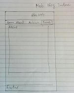

Design to Web
What a responsive site is, and why responsiveness is important?
Access to webpages is not limited to a desktop computer with screen resolution more than 950 pixels. There is a range of resolutions from tablet to mobile devices. There is an explosive growth of internet access via mobile devices and in future it will grow exponentially. So it is important that present day webpages must be designed to function on any devices maintaining the easy reading and particularly page navigation experience.
What mobile first design is, and why it's important?
Mobile first design is a strategy adopted to meet the growing smartphone services used for internet. Websites are first designed to function in mobile phones and later adding correlations in design for traditional desktop and laptop computers.
What frameworks are, and their pros and cons?
Framework is a standard design concept for webpage structure using HTML, CSS and JS codes.It has its own advantages browser compatibility, common solutions to problems. However it has it disadvantage of slow learning, adds more code to my CSS file that I may not need or use it. It has its own semantics and so you could lead to waste lot of time.
What a wireframe is and why we use it?
Wireframes are simple layout that specifies the size and placement of page elements, images, and other contents. It is like a blueprint to a home.

The grid sketch above shows a 12 column layout for the index page of the blog for screen resolution more than 550px, i.e. for laptop and desktop computers

The grid sketch above shows a 12 column layout for other post page of the blog for laptop and desktop computers

The grid sketch above shows the layout for index page for mobile screen resolution

The grid sketch above shows the layout for post page for mobiles.
I had trouble in aligning the author image and its description to the right side of the main section. It was working ok on a static screen. But to make it responsible the sizes of those elements were to change from fixed size to % size. So this was done with the CSS.
It took me substantial time to position the navigation bar below the blog title. Either it was not on a single line or it was positioning to the right side of the banner. It took even more time to make those drop down list type archive for other posts.
Posted: 19 Dec 2015